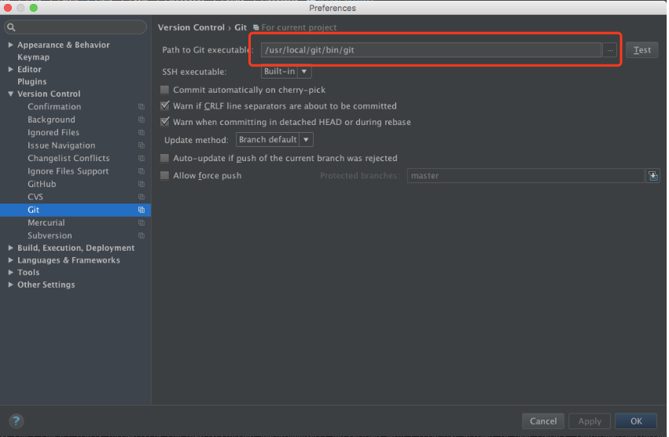

mac更新系统后git无法使用
mac更新系统后git无法使用
今天更新了mac系统，然后就踩了这个坑。
启动Idea 左下角角提示：
can't start git: /usr/bin/git
probably the path to git executable is not valid . `fix it`.12点击fix it后 点击最上边路径地址后边的test提示：
errors while executing git -- version. exitCode=1
errors: xcrun: error : invalid active developer path(/library/developer/commandlinetools),missing xcrun at:
/library/developer/commandlinetools.usr/bin/xcrun123找了一圈。。很多开发者都遇到过这问题。据说苹果每个版本的更新都会有这样的问题，原因是每次安装新的更新后，Xcode都被卸载了。。。。不扯别的说解决方案。
方法一
通过终端重新安装的Xcode命令行工具使用（其实这里安装的是Command Line Tools，Command Line Tools是在Xcode中的一款工具）
xcode-select --install1方法二（本人没试，感兴趣的小伙伴可以尝试下）
如果不安装Xcode可以重安装git(下载地址)然后在Idea中切换到路径/usr/local/git/bin/git。
